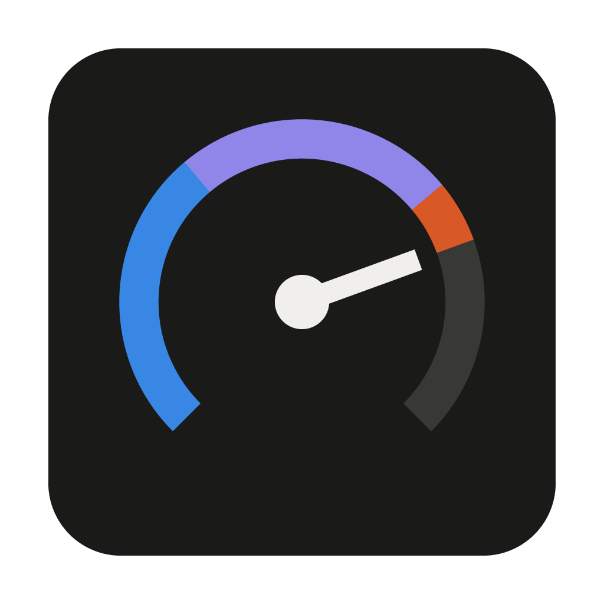

Choose one PC to host the dashboard. Every other device connects to it, then shows up automatically.
This PC collects stats from all your devices and serves the dashboard.
Adds this PC to an existing dashboard and lets you view it here.